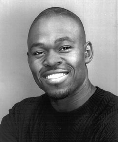

|
Tony Jean  Tony Cell: (516) 236-9023 Email: tony@pfiallsports.com |
Tony Jean is an experienced photojournalist, videographer and editor who has been with News 12 Long Island since 2005. He has worked freelance as a producer and director of live concerts, sporting events, and taped interviews since 2004. Though trained as a cameraman and editor (Avid and Final Cut Pro), Tony also has experience with lighting, audio board operation, crane and boom operation, on air reporting, VCR, and teleprompter operation. Tony is a member of Make a Wish Foundation/ United Way and of Ebenezer Baptist Church of Westbury where he offers his talents to tape services and events as needed. Tony has his degree in Communication Art. Tony is the Production Manager of PFI All-Sports. He is responsible for hiring and supervising crew, filming and editing reels, maintaining and outsourcing source material, and maintaining and storing production equipment. |